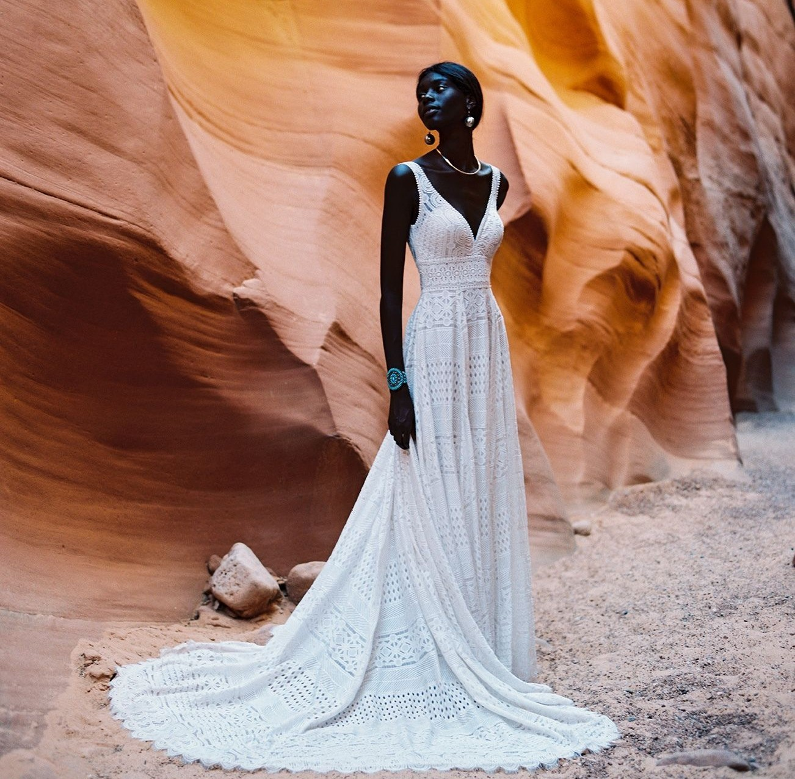
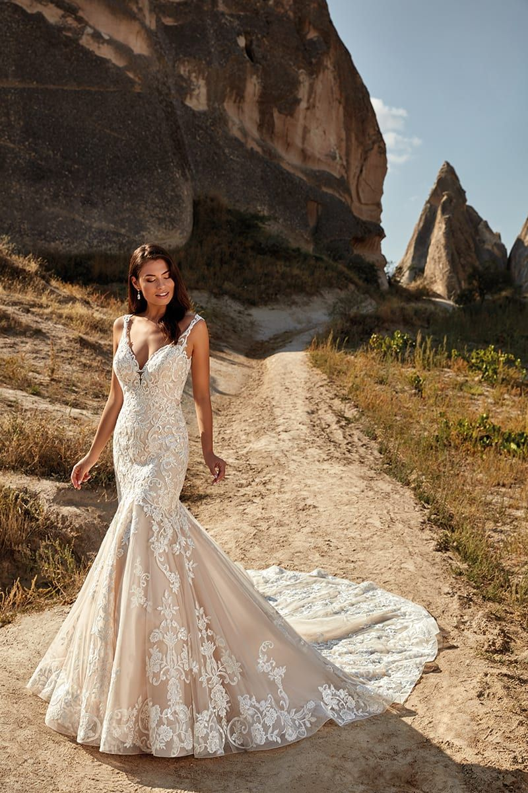
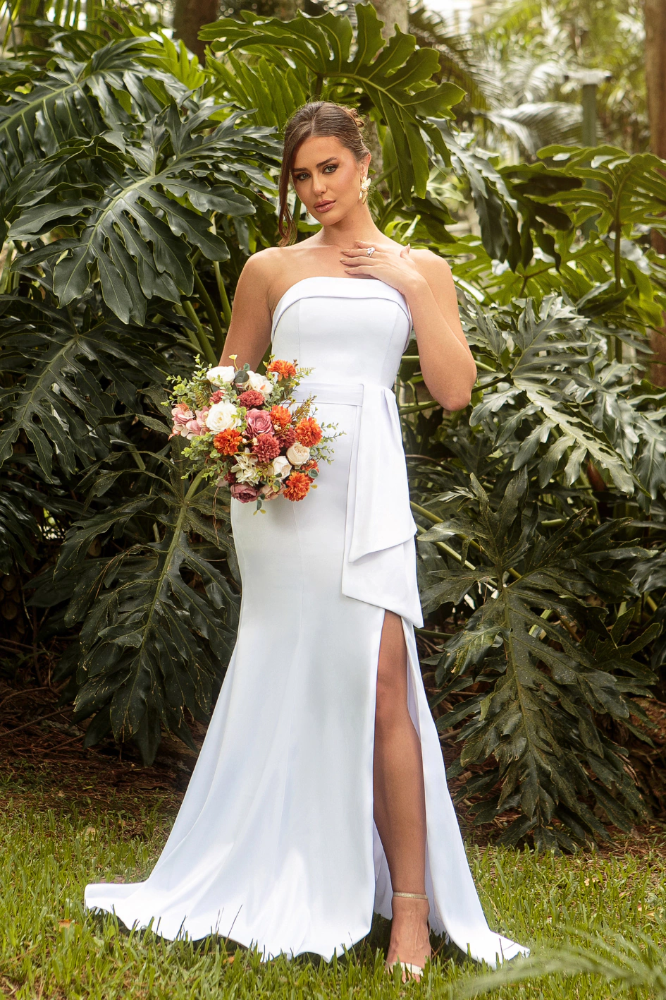
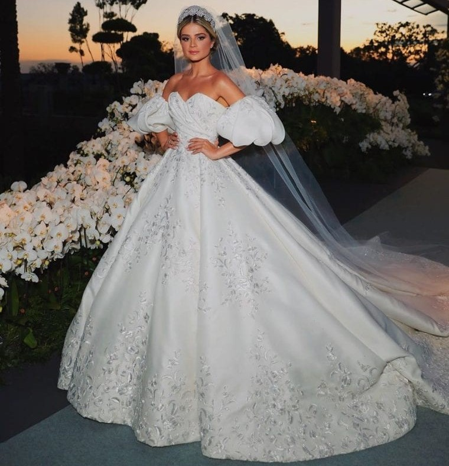
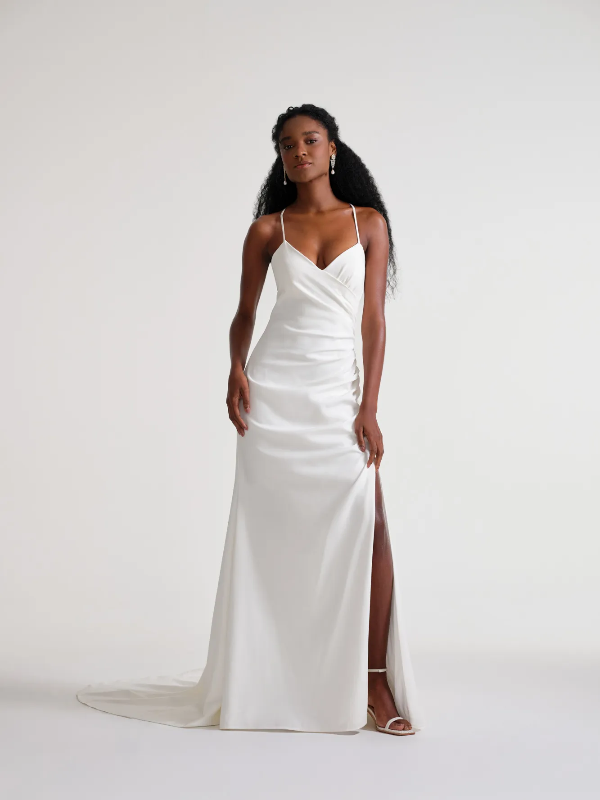

Vestidos

Vestido Evasê: O Corte Romântico e Atemporal para o Seu Grande Dia
O vestido de noiva com corte evasê é um dos modelos mais clássicos e queridos pelas noivas.
Sua forma em “A”, ajustada na parte superior e suavemente aberta na saia, cria uma silhueta
feminina e elegante, que valoriza todos os tipos de corpos. Além de atemporal, o corte evasê
pode ser adaptado a diferentes estilos de casamento, desde os mais tradicionais até
cerimônias ao ar livre.
Principais Características:
Silhueta em "A": A principal característica é a saia que alarga suavemente a partir da cintura, assemelhando-se à letra "A".
Caimento: Leve, fluido e confortável, ideal para o dia a dia ou ocasiões formais.
Versatilidade: Veste bem diferentes tipos físicos, pois não aperta o quadril.

Vestido Sereia: O Caimento perfeito para o corpo
O vestido sereia é um modelo glamouroso que valoriza as curvas, caracterizado por ser
justo ao corpo desde o busto até o joelho ou coxa, abrindo-se em uma cauda ou babado a
partir dessa altura. Ideal para festas e noivas, ele cria uma silhueta dramática e sofisticada,
desenhando o corpo com sensualidade.
Principais Características:
Modelagem: Ajustada ao corpo (busto, cintura e quadril), abrindo em "cauda de peixe" na parte inferior.
Silhueta: Enfatiza o formato ampulheta.
Efeito: Sensual e sofisticado, ideal para eventos de gala, madrinhas e noivas.
Variações: Pode ser o sereia
clássico (aperto até o joelho) ou o semi-sereia (ajustado até o quadril), que oferece maior
mobilidade.

Vestido Império: Domine a cena com uma vestimenta de imperatriz
O vestido império (ou com cintura império) é caracterizado por um corpete ajustado que
termina logo abaixo do busto, com uma saia longa e fluida que cai suavemente a partir desse ponto.
Inspirado na moda neoclássica, este estilo alonga a silhueta, sendo elegante, romântico e
confortável, frequentemente confeccionado em tecidos leves.
Principais Características:
Cintura Alta: A costura principal situa-se logo abaixo do busto, e não na cintura natural.
Saia Fluida: A saia, seja evasê ou solta, contorna o corpo sem volume excessivo de anáguas.
Decotes e Mangas: Comumente possui decote quadrado, canoa ou em V, com opções de alças finas ou mangas variadas.

Vestido Princesa: Digna de um belo conto de fadas
Peça icônica que simboliza elegância e feminilidade
O vestido de princesa é uma peça icônica que simboliza elegância e feminilidade. Geralmente, é caracterizado por seu volume,
mangas bufantes e cintura marcada. Os detalhes em bordados e pedrarias são comuns, realçando a coroa e o buquê. O vestido
princesa é uma escolha encantadora para quem sonha em se sentir uma verdadeira princesa no seu grande dia.
Principais Características:
Volume da saia: A saia é o grande destaque, podendo ter diversas camadas de tecidos encorpados garantindo amplitude.
Cintura Marcada: O modelo foca na definição da cintura, por vezes utilizando a cintura basque, para alongar o tronco.
Decotes e Mangas: O decote coração é muito comum, adaptando-se a decotes ombro a ombro, tomara-que-caia ou com mangas.

Vestido Reto: Discreto e impactante
Esse estilo é conhecido por sua simplicidade e sofisticação, sendo uma opção atemporal para quem busca um visual refinado. O corte
reto valoriza a silhueta da noiva, proporcionando um look clean e moderno. É uma escolha versátil que combina bem com diferentes tipos
de cerimônias e estilos pessoais. Ideal para quem procura elegância e minimalismo.
Principais Características:
Caimento Fluido: A saia cai de forma suave, sem o volume de modelos princesa ou evasê.
Minimalismo e Simplicidade: Geralmente liso, sem bordados ou pedrarias, investindo na sofisticação do tercido e corte.
Silhueta Longilínea: Possui um corte vertical que acompanha o corpo sem marcá-lo exageradamente, alongando a figura.